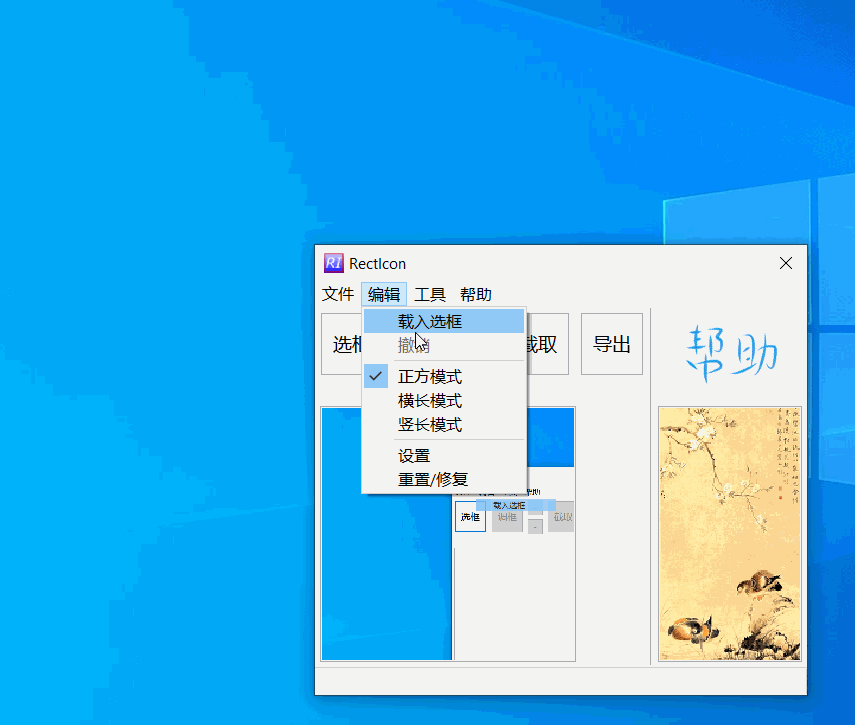
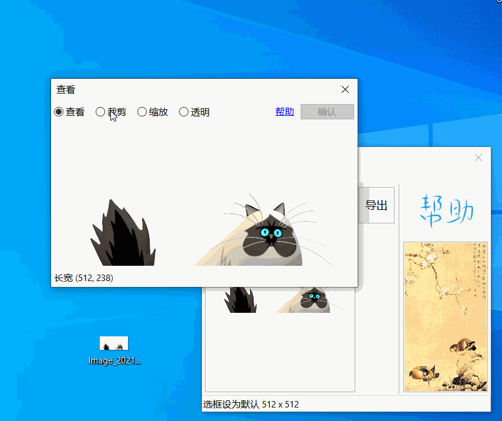
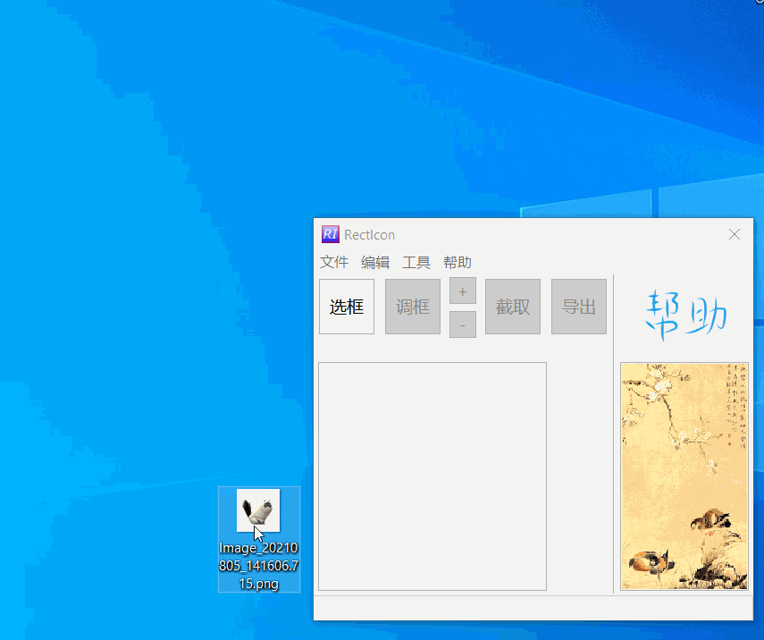
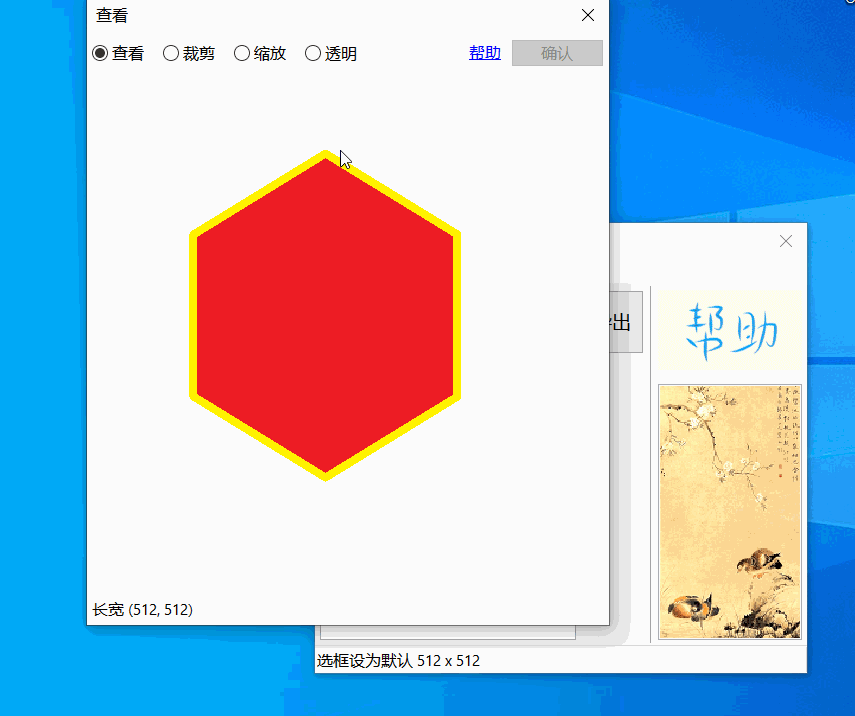
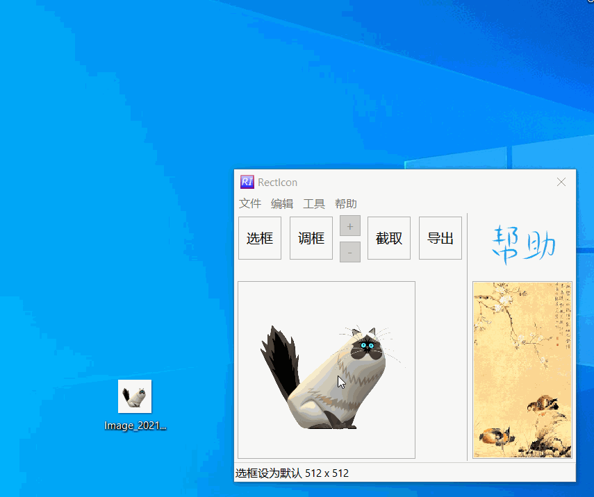

编辑
外置编辑
- MS Paint
Windows 画图 - MS Paint3D
Windows 3D 画图

用外置图形编辑器编辑后请 保存图形 Ctrl + S 并关闭外置外置图形编辑器
试用外置图形编辑器, 请保证不能更换保存路径, 如果更换路径 RectIcon 不会更新保存的图
- ✓ 使用 MS Paint, 任意编辑均可更新
- ✓ 简单涂改 MS Paint3D, 可以更新
- ✘ MS Paint3D 提示另存为时
- ✘ 比如操作 MS Paint3D 打开透明背景时, 会提示另存为, 这个情况 RectIcon 不会更新
内置编辑
查看
双击 查看图片, 打开内置编辑器
裁剪
按比例裁剪，比例依照选框长宽比

缩放
缩放图片，大小依照选框

透明
使背景透明，取色并调整偏离


以上可以连续操作，并使用撤销菜单撤销编辑